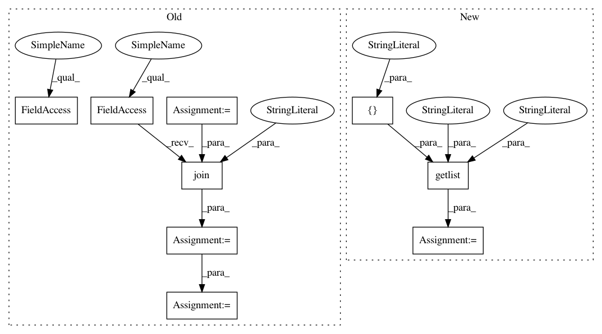

7c3f95d1505944f54c998f27f144d4dcb8968477,src/python/twitter/pants/tasks/benchmark_run.py,BenchmarkRun,__init__,#BenchmarkRun#Any#,39
Before Change
// For rewriting JDK classes to work, the JAR file has to be listed specifically in
// the JAR manifest as something that goes in the bootclasspath.
// The MANIFEST list a jar "allocation.jar" this is why we have to rename it
agent_jar = os.readlink(profile_classpath(self.agent_profile)[0])
allocation_jar = os.path.join(os.path.dirname(agent_jar), "allocation.jar")
// TODO(Steve Gury): Find a solution to avoid copying the jar every run and being resilient
// to version upgrade
shutil.copyfile(agent_jar, allocation_jar)
os.environ["ALLOCATION_JAR"] = str(allocation_jar)
if context.options.debug:
self.java_args.extend(context.config.getlist("jvm", "debug_args"))
self.caliper_args += ["--debug"]
After Change
self._benchmark_bootstrap_tools = config.getlist("benchmark-run", "bootstrap-tools",
default=[":benchmark-caliper-0.5"])
self._agent_bootstrap_tools = config.getlist("benchmark-run",
"agent_profile",
default=[":benchmark-java-allocation-instrumenter-2.1"])
self._bootstrap_utils.register_all([self._benchmark_bootstrap_tools,
self._agent_bootstrap_tools])
In pattern: SUPERPATTERN
Frequency: 4
Non-data size: 9
Instances
Project Name: pantsbuild/pants
Commit Name: 7c3f95d1505944f54c998f27f144d4dcb8968477
Time: 2013-11-25
Author: benjy@foursquare.com
File Name: src/python/twitter/pants/tasks/benchmark_run.py
Class Name: BenchmarkRun
Method Name: __init__
Project Name: pantsbuild/pants
Commit Name: 7c3f95d1505944f54c998f27f144d4dcb8968477
Time: 2013-11-25
Author: benjy@foursquare.com
File Name: src/python/twitter/pants/tasks/benchmark_run.py
Class Name: BenchmarkRun
Method Name: __init__
Project Name: pantsbuild/pants
Commit Name: 0ae83e5eea0c5df1423be7c34db26c203d5f51de
Time: 2013-11-07
Author: pl@foursquare.com
File Name: src/python/twitter/pants/tasks/benchmark_run.py
Class Name: BenchmarkRun
Method Name: __init__
Project Name: pantsbuild/pants
Commit Name: 3f5e994767718a930681d75bd59154525b02cd18
Time: 2014-01-19
Author: benjyw@gmail.com
File Name: src/python/twitter/pants/python/thrift_builder.py
Class Name: PythonThriftBuilder
Method Name: __init__
Project Name: pantsbuild/pants
Commit Name: 0a6edd21b9ab29a1f733b90ff15092e7a03f665d
Time: 2014-01-15
Author: jsirois@twitter.com
File Name: src/python/twitter/pants/python/thrift_builder.py
Class Name: PythonThriftBuilder
Method Name: __init__